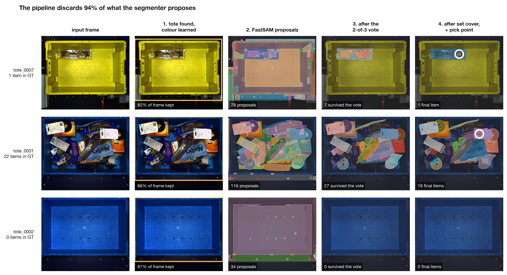
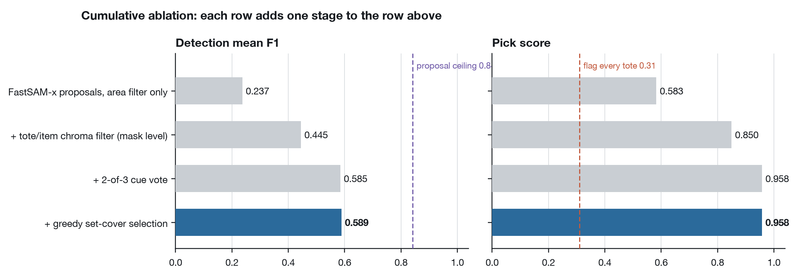
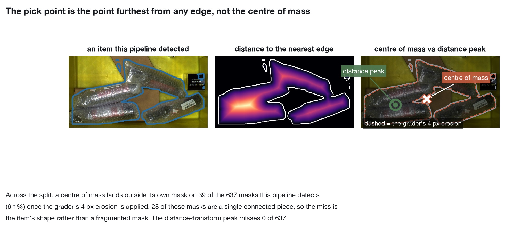
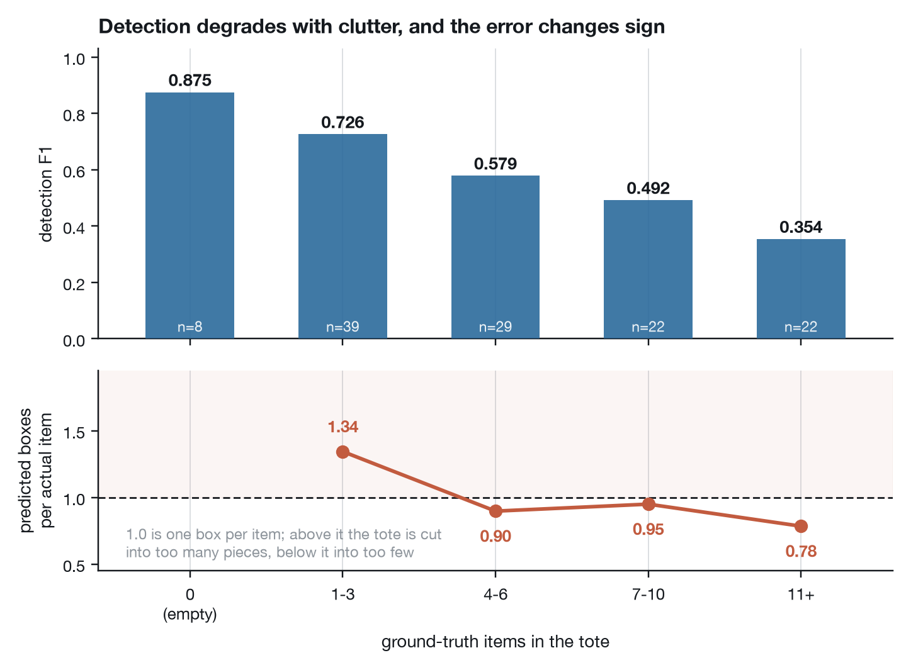
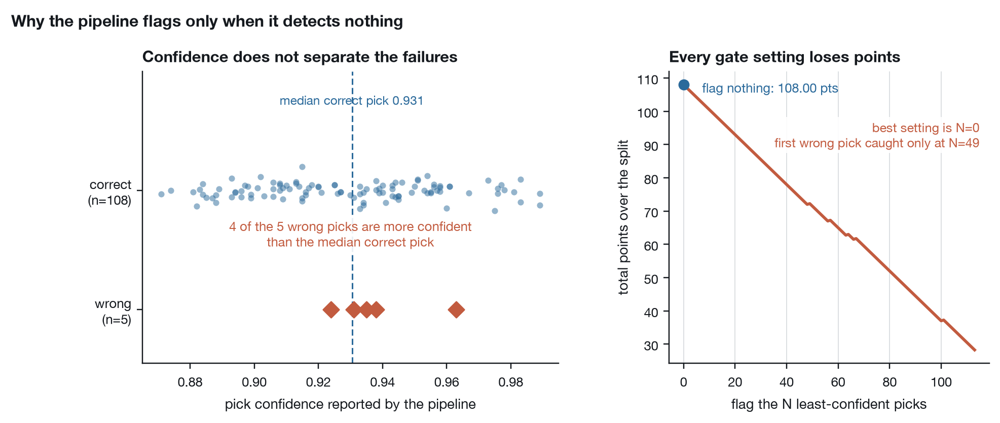
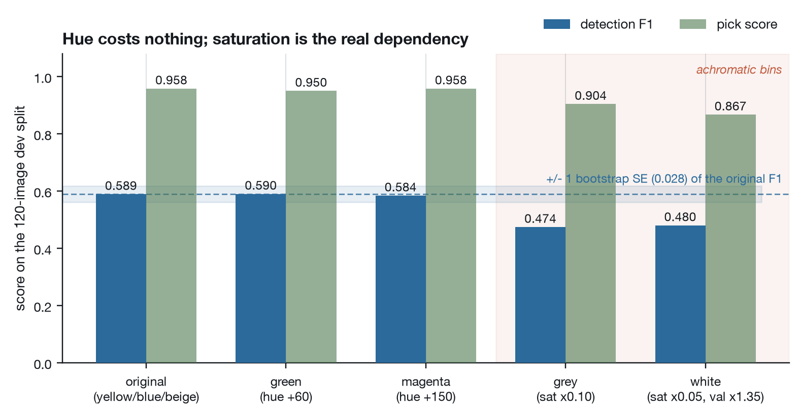
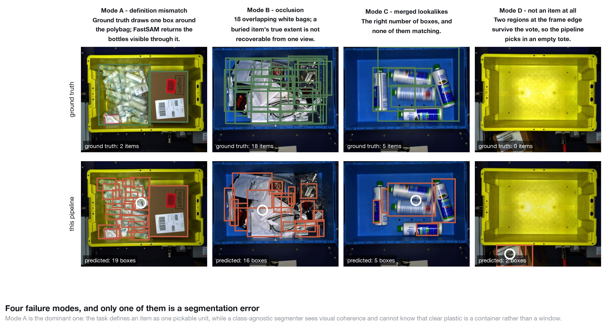

Warehouse Tote Perception
A four-stage vision pipeline for a robotic pack station: find the tote, segment what is in it, decide what is an item, and place the suction cup — 0.958 pick score at 619 ms on a laptop.
Given a top-down photo of a warehouse tote, the pipeline answers three questions: what is in there, where should the suction cup land, and is this a tote the robot should attempt at all. Built for the Warp Robotics perception challenge on 120 images from Amazon's ARMBench. It runs fully locally, with no hosted models.
On the dev split it reaches a pick score of 0.958 (108 correct picks, 5 wrong, 7 flagged) against 0.31 for flagging every tote, and a detection F1 of 0.589. Bootstrapping the 120 images gives a 90% interval of 0.925–0.983 for the pick score.

How it works
- Find the tote. The crop is keyed on bright OR saturated, not on tote colour, because keying on the vivid yellow and blue bins failed on 16 of 120 images: some totes are beige. It keeps every item pixel on all 120 images while discarding ~14% of each frame.
- Propose regions. FastSAM-x over the crop. A class-agnostic segmenter is the right tool, since the ground truth has no category labels: the task is "where does one thing end and the next begin", not "find the bottle". MobileSAM's automatic mode took 20.6 s per image, which would have been 41 minutes per pass over the split.
- Decide what is an item. Masks are kept by a 2-of-3 vote over three cues measured on 604 labelled masks: chromatic distance from the tote colour (0.859 balanced accuracy), chromatic spread within the mask (0.870) and edge density (0.840). The vote reaches 0.908, beating every AND/OR chain tried, and overlaps are resolved by greedy set cover.
- Choose the pick. The suction point is the peak of the item's distance transform, the point furthest from any edge.
What each stage buys

Why not the centre of mass

A suction cup needs the flattest, most continuous surface to seal on, and the grader erodes each item by 4 px before testing the pick. Across the 637 masks the pipeline detects, the centre of mass lands off its own item 39 times (6.1%); the distance-transform peak never does, by construction.
Clutter, and an error that changes sign

F1 falls from 0.875 on empty totes to 0.354 at 11+ items, but the boxes-per-item ratio crosses 1.0: sparse totes are cut into too many pieces, crowded ones into too few. One declining curve is hiding two different errors. Picking stays at 0.93–1.00 across every clutter level, because a pick only has to land on a real item.
Measured, not claimed

So the pipeline flags only when nothing survives detection, which correctly flags 7 of 8 empty totes. My confidence score measures pick quality, not the probability of being right; making it calibrated is the highest-value next step.

To test the colour-agnostic claim, I recoloured every tote to colours that appear nowhere in the split, leaving the items and the grader untouched. Hue costs nothing: green and magenta land within one bootstrap standard error. Grey and white bins cost ~0.11 F1, since they remove the strongest cue. That is exactly the loss the 2-of-3 vote was designed to survive.
Where it fails

The dominant failure is a definition mismatch, not a segmentation error: an item is one pickable unit, but a class-agnostic segmenter cannot know that clear plastic is a container. Four targeted attempts to raise F1, each aimed at a different stage, moved it by at most +0.004, and adding more proposals made it worse. The remaining error is in the segmenter's notion of an object, so the fixes are fine-tuning on ARMBench's instance labels and depth sensing for heavily occluded totes.
Latency
619 ms median (908 ms p95) per image on an unloaded M4 MacBook Air with no GPU. On battery, the more pessimistic condition, steady state is 711 ms median and 1,045 ms p95, still under a second. The very first run after a fresh install is about 2.4× slower (1,676 ms median), because Metal kernels compile on first use. The two runs produce byte-identical outputs; only the clock differs.